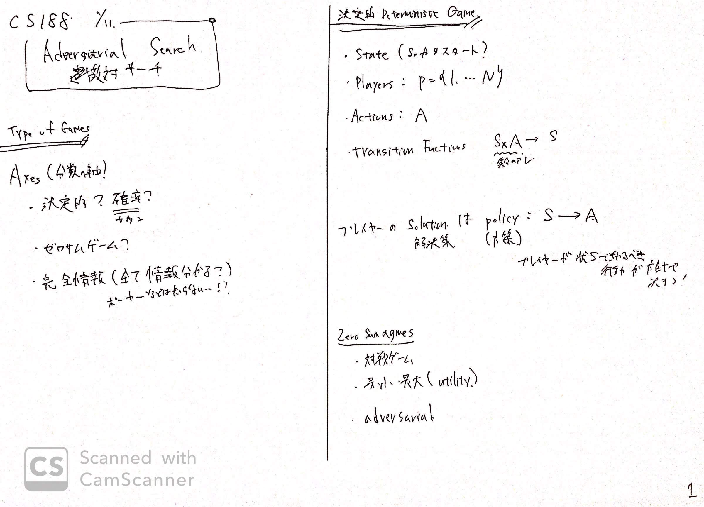
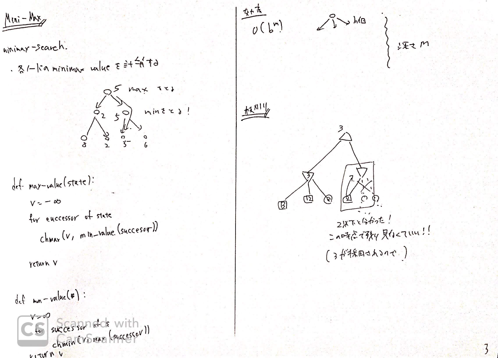
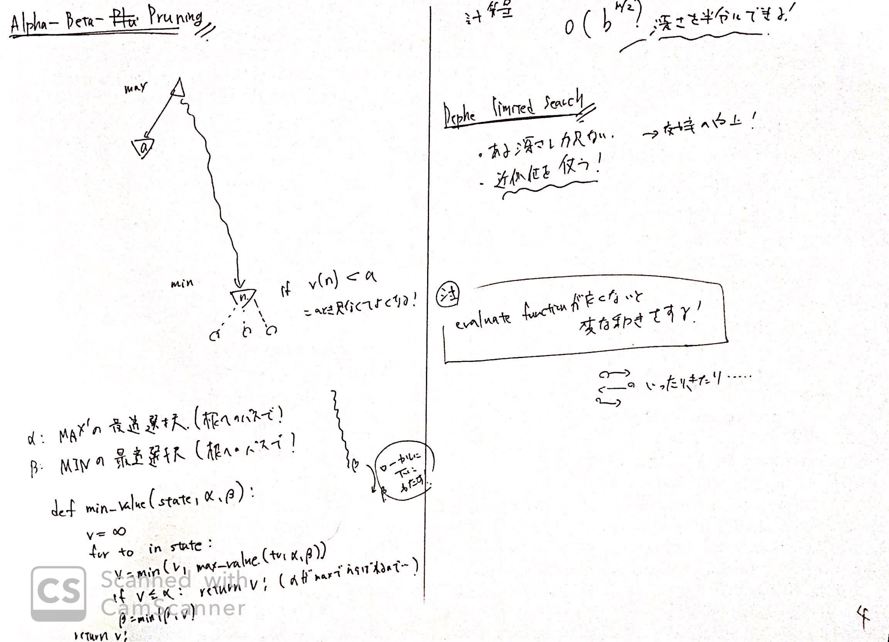

リンク
画像



内容
Game
GameはいくらかのAxes（分類）がなされる。
- 決定的か？確率的か？
- 確率的なら麻雀とか
- ゼロサムゲームか？
- 対戦型
- 完全情報ゲームか？
決定的の変数
- State
- Players
- Actions
- Transmition Function $SxA \to S$
- 集合のアレ、わすれた
プレイヤーのSolution（解決策）は、policy$S\to A$によって、定義される
つまり、方針によって、状態$S$で取る行動$A$が定まる。
Value of State
$V(s)=状態sから達成できる最大のスコア$
と定義する。
再帰的には
$V(s) = \max_{s’ \in children(s)} V(s’)$
と示すことができる。
Adversaial tree
一人のゲームなら上記の最大スコアをツリーの子から選べば良いが
敵がいる場合が存在する。
この場合、
- 自分は最大になるように行動する
- 相手は最小になるように行動する
$minmax$な行動を行う。
これをpythonっぽく書くと
1 | def max_value(s): |
のようになる。
計算量
MIN_MAXの計算量は、深さを$m$、各ノードからの子供の数を$b$とすると
$O(b^m)$となる。
でかいね。
Alpha Beta Pruning
いわゆる枝刈り高速化。
例えば、すでに他の枝でmaxの候補が10だとする。
このとき、別の枝でminの候補が3となったとき、このmin以下の枝は探索しなくて良い。
なぜなら、この枝は相手によって3となり、自分は絶対に10を選んだほうが良いからである。
よって、これをPythonで書くと
1 | def min_value(s, a, b): |
ここで、
- $a$=根から頂点uまでのパス上のMAXの最適選択
- $b$=根から頂点uまでのパス上のMINの最適選択
とする。
これによって、計算量を$O(b^{m/2})$まで落とせるらしい。
Depth Limited Search
深さ制限探索。
上記のAlpha, BetaPruningを入れても
十分計算量はでかい。
そのため、現実的なゲーム理論では、深さ$k$を決めて、そこまでの探索をおこなうしかない。
Comment